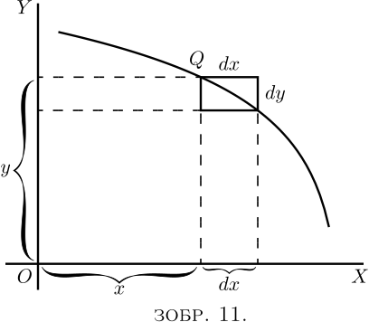
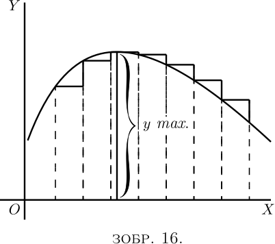
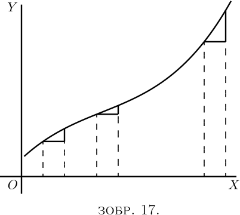
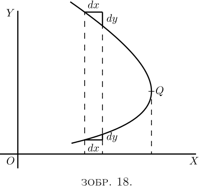
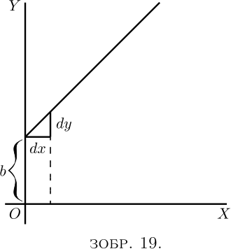
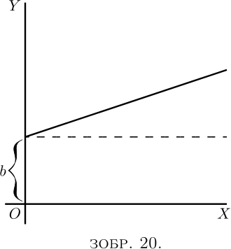
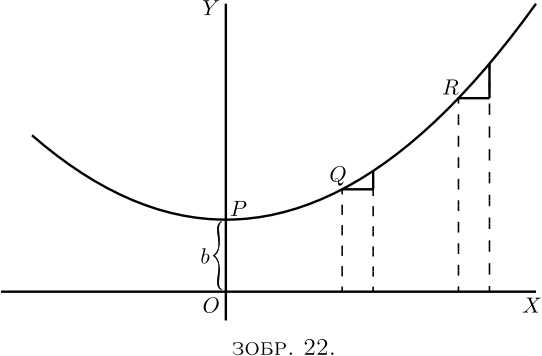
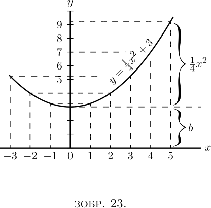
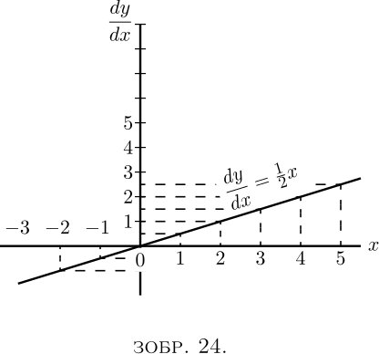
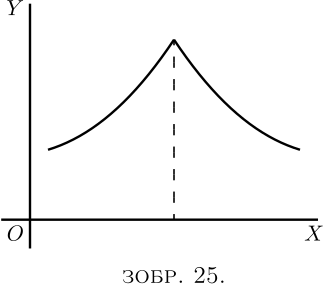

Корисно розглянути, який геометричний зміст можна надати похідній.
По-перше, будь-яка функція $x$, наприклад $x^2$, або $\sqrt{x}$, або $ax+b$, може бути зображена як крива, і в наш час кожен школяр знайомий з процесом побудови кривої.
Нехай $PQR$, на Зображенні 7, це частина кривої, побудованої відносно осей координат $OX$ та $OY$. Розглянемо будь-яку точку $Q$ на цій кривій, де абсциса точки дорівнює $x$, а її ордината — $y$. Тепер поспостерігайте, як змінюється $y$, коли змінюється $x$. Якщо $x$ збільшити на невеликий приріст $dx$, праворуч, ми помітимо, що $y$ також (на цій конкретній кривій) збільшується на невеликий приріст $dy$ (оскільки ця конкретна крива зростає). Тоді відношення $dy$ до $dx$ є мірою ступеня нахилу кривої між двома точками $Q$ і $T$. На малюнку ми бачимо, що крива між $Q$ і $T$ має багато різних нахилів, тому ми не можемо говорити про нахил кривої між $Q$ і $T$. Проте, якщо $Q$ і $T$ настільки близькі один до одного, що невелика частина $QT$ кривої практично пряма, тоді можна сказати, що співвідношення $\dfrac{dy}{dx}$ це нахил кривої вздовж $QT$. Створена пряма $QT$ з обох боків торкається кривої лише вздовж ділянки $QT$, і якщо ця ділянка нескінченно мала, пряма лінія торкатиметься кривої лише в одній точці, і тому вона буде дотичною до кривої.
Ця дотична до кривої, очевидно, має такий самий нахил, як $QT$, тому $\dfrac{dy}{dx}$ є нахилом дотичної до кривої в точці $Q$, для якої знайдено значення $\dfrac {dy}{dx}$.
Ми побачили, що короткий вислів «нахил кривої» не має точного значення, оскільки крива має дуже багато нахилів — насправді кожна маленька частина кривої має різний нахил. «Нахил кривої в точці» є, однак, цілком визначеною річчю - це нахил дуже малої частини кривої, розташованої саме в цій точці. І ми побачили, що це те саме, що і «нахил дотичної до кривої в цій точці».
Зверніть увагу, що $dx$ — це короткий крок праворуч, а $dy$ — відповідний короткий крок угору. Ці кроки слід вважати якомога коротшими — насправді нескінченно короткими, — хоча на діаграмах ми маємо представляти їх частинами, які не є нескінченно малими, інакше їх не можна було б побачити.
Надалі ми будемо активно використовувати цю обставину, що $\dfrac{dy}{dx}$ представляє нахил кривої в будь-якій точці.
Якщо крива в певній точці має нахил на $45°$, як на Зображенні 8, $dy$ і $dx$ будуть рівні, і значення $\dfrac{dy}{dx} = 1$.
Якщо крива нахиляється крутіше, ніж $45°$ (Зображення 9), $\dfrac{dy}{dx}$ буде більше $1$.
Якщо крива дуже плавно нахиляється вгору, як на Зображенні 10, $\dfrac{dy}{dx}$ буде дробом, меншим за $1$.
Для горизонтальної прямої або горизонтального місця на кривій $dy=0$, а тому $\dfrac{dy}{dx}=0$. 
Якщо крива має нахил униз, як на Зображенні 11, $dy$ буде кроком вниз, і тому має вважатися від’ємним значенням, отже $\dfrac{dy}{dx}$ також матиме негативний знак.
Якщо «крива» є прямою лінією, як на Зображенні 12, значення $\dfrac{dy}{dx}$ буде однаковим у всіх її точках. Іншими словами її нахил буде постійним.
Якщо крива повертається більше вгору, коли йде праворуч, значення $\dfrac{dy}{dx}$ ставатимуть все більшими зі збільшенням крутизни, як на Зображенні 13.
Якщо крива така, що стає все більш пласкою і рівною в міру просування, значення $\dfrac{dy}{dx}$ будуть ставати все меншими в міру досягнення більш плоскої частини, як на Зображенні 14.
Якщо крива спочатку опускається, а потім знову підіймається, як на Зображенні 15, представляючи увігнутість вгору, тоді явно $\dfrac{dy}{dx}$ спочатку буде від’ємним зі зменшенням значень у міру вирівнювання кривої, а потім дорівнюватиме нулю в точці, де досягається нижня частина кривої, і з цього моменту $\dfrac{dy}{dx}$ матиме додатні значення, які будуть зростати. У такому випадку кажуть, що $y$ проходить повз мінімум. Мінімум $y$ не обов’язково є найменшим значенням $y$, це те значення $y$, яке відповідає нижній частині впадини; наприклад, на Зображенні 28 (значення $y$, що відповідає нижній частині западини, дорівнює $1$, тоді як в інших місцях $y$ приймає значення, менші за це. Характеристика мінімуму полягає в тому, що $y$ має зростати з обох сторін від нього.
Примітка – Для конкретного значення $x$, у якому $y$ є мінімум, значення $\dfrac{dy}{dx} = 0$.
Якщо крива спочатку підіймається, а потім опускається, значення $\dfrac{dy}{dx}$ спочатку будуть додатними, потім нуль, коли вершина досягнута, потім негативні, оскільки крива нахилена вниз, як на Зображенні 16. У цьому випадку кажуть, що $y$ проходить повз максимум, але максимум $y$ не обов’язково є найбільшим значенням $y$. На Зображенні 28 максимум $y$ дорівнює $2\frac{1}{3}$, але це аж ніяк не найбільше значення, яке $y$ може мати в іншій точці кривої.  
Примітка – Для конкретного значення $x$, у якій $y$ дорівнює максимуму, значення $\dfrac{dy}{dx}= 0$.
Якщо крива має особливу форму як на Зображенні 17, значення $\dfrac{dy}{dx}$ завжди будуть додатними, але буде одне конкретне місце, де схил найменш крутий, де значення $\dfrac{dy}{dx}$ буде мінімальним; тобто менше, ніж у будь-якій іншій частині кривої.
Якщо крива має вигляд як на Зображенні 18, значення $\dfrac{dy}{dx}$ буде від'ємним у верхній частині та додатним у нижній; тоді як у кінці кривої, де вона стає фактично перпендикулярною, значення $\dfrac{dy}{dx}$ буде нескінченно великим. 
Тепер, коли ми розуміємо, що $\dfrac{dy}{dx}$ вимірює крутизну кривої в будь-якій точці, повернімось до деяких рівнянь, які ми вже навчилися диференціювати.
(1) Як найпростіший випадок візьмемо наступний вираз: \[ y=x+b. \]  
Він відображений на Зображенні 19, використовуючи рівні масштаби для $x$ і $y$. Якщо покласти $x = 0$, то відповідна ордината буде $y = b$; тобто «крива» перетинає вісь $y$ на висоті $b$. Звідти вона підіймається на $45°$. Для будь-яких значень, які ми додаємо до $x$ праворуч, ми маємо такий самий підйом $y$. Лінія має зростання $1$ до $1$.
Тепер продиференціюємо $y = x+b$ за правилами, які ми вже вивчили (тут і тут), і ми отримуємо $\dfrac{dy}{dx} = 1$.
Нахил лінії такий, що для кожного маленького кроку $dx$ праворуч ми робимо такий самий маленький крок $dy$ угору. І цей нахил постійний – завжди той самий.
(2) Візьмемо інший випадок: \[ y = ax+b. \] Ми знаємо, що ця крива, як і попередня, буде починатися з висоти $b$ на осі $y$. Але перш ніж малювати криву, знайдімо її нахил шляхом диференціювання, що дає $\dfrac{dy}{dx} = a$. Нахил буде під постійним кутом, тангенс якого тут є $a$. Давайте присвоїмо $a$ якесь числове значення, скажімо, $\frac{1}{3}$. Тоді ми повинні надати йому такий нахил, щоб він підіймався на $1$ за $3$; або $dx$ буде в $3$ рази більше, ніж $dy$; як збільшене на Зображенні 21. Отже, проведемо пряму (Зображення 20) з даним схилом.
(3) Тепер трохи складніший випадок. \begin{align*} \text{ Нехай } y= ax^2 + b. \end{align*}
Крива знову почнеться на осі $y$ з висоти $b$ над початком координат.
Тепер диференціюємо. [Якщо ви забули, поверніться сюди; або, краще, не повертайтеся назад, але обдумайте диференціювання.] \[ \frac{dy}{dx} = 2ax. \] 
Це показує, що крутизна не буде постійною: вона зростає зі збільшенням $x$. У початковій точці $P$, де $x = 0$, крива (Зображення 22) не має нахилу – тобто рівна. Ліворуч від початку координат, де $x$ має від’ємні значення, $\dfrac{dy}{dx}$ також матиме від’ємні значення або опускатиметься зліва направо, як на малюнку.
Проілюструємо це на конкретному прикладі. Беручи рівняння \[ y = \tfrac{1}{4}x^2 + 3, \] і диференціюючи його, ми отримуємо \[ \dfrac{dy}{dx} = \tfrac{1}{2}x. \] Тепер призначимо $x$ кілька послідовних значень, скажімо, від $0$ до $5$, і обчислимо відповідні значення $y$ за першим рівнянням; і $\dfrac{dy}{dx}$ за другим. Зводячи результати в таблицю, маємо:
| $x$ | $0$ | $1$ | $2$ | $3$ | $4$ | $5$ |
| $y$ | $3$ | $3\frac{1}{4}$ | $4$ | $5\frac{1}{4}$ | $7$ | $9\frac{1}{4}$ |
| $d$ | $0$ | $\frac{1}{2}$ | $1$ | $1\frac{1}{2}$ | $2$ | $2\frac{1}{2}$ |
Тепер зобразимо їх двома кривими, на Зображенні 23 побудова графіка значень $y$ проти $x$, і на Зображенні 24 $\dfrac{dy}{dx}$ проти $x$. Для будь-якого приписаного значення $x$, висота ординати в другій кривій пропорційна схилу першої кривої.
 Якщо крива раптово різко сходить, як на Зображенні 25, схил у цій точці раптово змінюється зі схилу вгору на схил вниз. У цьому випадку $\dfrac{dy}{dx}$ явно різко зміниться з позитивного на негативне значення. 
Наступні приклади показують подальше застосування принципів, які щойно пояснювались.
(4) Знайдіть нахил дотичної до кривої \[ y = \frac{1}{2x} + 3, \] у точці, де $x = -1$. Знайдіть кут, який ця дотична утворює з кривою $y = 2x^2 + 2$.
Нахил дотичної — це нахил кривої в точці, де вони торкаються одна одної (див. тут); тобто це $\dfrac{dy}{dx}$ кривої для цієї точки. Тут $\dfrac{dy}{dx} = -\dfrac{1}{2x^2}$, і для $x = -1$, $\dfrac{dy}{dx} = -\dfrac{1}{2 }$, що є нахилом дотичної та кривої в цій точці. Дотична, яка є прямою лінією, має для рівняння $y = ax + b$, а її нахил дорівнює $\dfrac{dy}{dx} = a$, отже $a = -\dfrac{1}{2}$. Крім того, якщо $x= -1$, $y = \dfrac{1}{2(-1)} + 3 = 2\frac{1}{2}$, і оскільки дотична проходить повз цю точку, координати точки повинні задовольняти рівнянню дотичної, а саме \[ y = -\dfrac{1}{2} x + b, \] так що $2\frac{1} {2} = -\dfrac{1}{2} × (-1) + b$ і $b = 2$; тому рівняння дотичної - це $y = -\dfrac{1}{2} x + 2$.
Тепер, якщо дві криві перетинаються, точка перетину є спільною для обох кривих, і її координати повинні задовольняти рівняння кожної з них. Тобто вона має бути розв'язком системи рівнянь, утвореної рівняннями цих кривих. Тут криві перетинаються одна з одною у точках, заданих розв’язком \begin{aligned} y &= 2x^2 + 2, \\ y &= -\tfrac{1}{2} x + 2 \quad\text{або }\quad 2x^2 + 2 = -\tfrac{1}{2} x + 2; \end{aligned} тобто \[ x(2x + \tfrac{1}{2}) = 0. \]
Розв’язками цього рівняння є $x = 0$ і $x = -\tfrac{1}{4}$. Нахил кривої $y = 2x^2 + 2$ у будь-якій точці дорівнює \[ \dfrac{dy}{dx} = 4x. \]
Для точки, де $x = 0$, цей нахил дорівнює нулю, крива горизонтальна. Для точки, де \[ x = -\dfrac{1}{4},\quad \dfrac{dy}{dx} = -1; \] отже, крива в цій точці нахилена вниз праворуч під таким кутом $\theta$ до горизонталі, що $\tan \theta = 1$; тобто на $45°$ до горизонталі.
Нахил прямої становить $-\tfrac{1}{2}$; тобто вона нахилена вниз праворуч і складає з горизонталлю кут $\phi$ такий, що $\tan \phi = \tfrac{1}{2}$, тобто кут $26° 34'$. Звідси випливає, що в першій точці крива перетинає пряму під кутом $26° 34'$, а в другій — під кутом $45° - 26° 34' = 18° 26'$.
(5) Через точку з координатами $x = 2$, $y = -1$ необхідно провести пряму лінію, яка є дотичною до кривої $y = x^2 - 5x + 6$. Знайти координати точки дотику.
Нахил дотичної має бути таким самим, як $\dfrac{dy}{dx}$ кривої; тобто $2x - 5 $.
Рівняння прямої $y = ax + b$, і оскільки воно виконується для значень $x = 2$, $y = -1$, то $-1 = a×2 + b$; також його $\dfrac{dy}{dx} = a = 2x - 5$.
$x$ і $y$ точки дотику також повинні задовольняти як рівнянню дотичної, так і рівнянню кривої.
Тоді ми маємо \begin{aligned} y &= x^2 - 5x + 6, \,\,\,\,\,(i) \\ \end{aligned} \begin{aligned} y &= ax + b , \,\,\,\,\,(ii) \\ \end{aligned} \begin{aligned} -1 &= 2a + b, \,\,\,\,\,(iii) \\ \end{aligned} \begin{aligned} a &= 2x - 5, \,\,\,\,\,(iv) \end{aligned} чотири рівняння в $a$, $b$, $x$, $ y$.
Рівняння (i) і (ii) дають $x^2 - 5x + 6 = ax+b$.
Замінюючи $a$ і $b$ на їх значення в цьому випадку, ми отримуємо \[ x^2 - 5x + 6 = (2x - 5)x - 1 - 2(2x - 5), \], що спрощується до $x^ 2 - 4x + 3 = 0$, розв'язками яких є: $x = 3$ і $x = 1$. Замінивши в (i), отримаємо $y = 0$ і $y = 2$ відповідно; тоді двома точками дотику є $x = 1$, $y = 2$ і $x = 3$, $y = 0$.
Примітка. – У всіх вправах, пов’язаних із кривими, учням буде надзвичайно повчально перевіряти отримані висновки шляхом фактичної побудови кривих.
(1) Побудуйте криву $y = \tfrac{3}{4} x^2 - 5$ у міліметровому масштабі. Виміряйте в точках, що відповідають різним значенням $x$, кут її нахилу.
Знайдіть, диференціюючи рівняння, вираз для нахилу; і подивіться за таблицею тангенсів, чи узгоджується це з виміряним кутом.
(2) Знайдіть, яким буде кут нахилу кривої \[ y = 0.12x^3 - 2, \] у конкретній точці, абсциса якої $x = 2$.
(3) Якщо $y = (x - a)(x - b)$, покажіть, що в конкретній точці кривої, де $\dfrac{dy}{dx} = 0$, $x$ матиме значення $ \tfrac{1}{2} (a + b)$.
(4) Знайдіть $\dfrac{dy}{dx}$ рівняння $y = x^3 + 3x$; і обчисліть числові значення $\dfrac{dy}{dx}$ для точок, що відповідають $x = 0$, $x = \tfrac{1}{2}$, $x = 1$, $x = 2 $.
(5) На кривій, до якої відноситься рівняння $x^2 + y^2 = 4$, знайдіть значення $x$ у тих точках, де нахил ${} = 1$.
(6) Знайдіть нахил у будь-якій точці кривої, рівняння якої $\dfrac{x^2 }{3^2} + \dfrac{y^2}{2^2} = 1$; надайте числове значення нахилу в точках, де $x = 0$, і там, де $x = 1$.
(7) Рівняння дотичної до кривої $y = 5 - 2x + 0.5x^3$, має вигляд $y = mx + n$, де $m$ і $n$ константи. Знайдіть значення $m$ і $n$, якщо точка, де дотична торкається кривої, має $x=2$ для абсцис.
(8) Під яким кутом дві криві \[ y = 3.5x^2 + 2 \quad \text{і} \quad y = x^2 - 5x + 9.5 \] перетинають одна одну?
(9) Дотичні до кривої $y = ± \sqrt{25-x^2}$ проводяться в точках, для яких $x = 3$ і $x = 4$. Знайдіть координати точки перетину дотичних та їх взаємний нахил.
(10) Пряма лінія $y = 2x - b$ дотикається до кривої $y = 3x^2 + 2$ в одній точці. Які координати точки дотику і яке значення $b$?
(2) $1.44$.
(4) $\dfrac{dy}{dx} = 3x^2 + 3$; а числові значення: $3$, $3 \frac{3}{4}$, $6$ і $15$.
(5) $ ± \sqrt{2}$.
(6) $ \dfrac{dy}{dx} = - \dfrac{4}{9} \dfrac{x}{y}$. Нахил дорівнює нулю, у $x = 0$; і $\mp \dfrac{1}{3 \sqrt{2}}$, у $x = 1$.
(7) $m = 4$, $n = -3$.
(8) Перетини при $x = 1$, $x = -3$. Кути $153°\;26'$, $2°\;28'$.
(9) Перетин у $x = 3.57$, $y = 3.50$. Кут $16°\;16'$.
(10) $x = \frac{1}{3}$, $y = 2 \frac{1}{3}$, $b = -\frac{5}{3}$.